Decreasing Universe Theory: A Dilatação do tempo
Cósmico e a explosão da SN1A
Joao carlos Holland de Barcellos, São Paulo Brasil
Abstract
Iremos mostrar que na “Decreasing Universe Theory” (DUT) o tempo dentro de um campo gravitacional é alterado da mesma forma que as escalas de medidas de distância o são. A nível cósmico (medidas de milhões de anos) esse efeito é perceptível e explica a variação das medidas do tempo da explosão das Super Novas do tipo SN1A.
PassWords: Decreasing Universe Theory;
DUT ; Dark Energy; Dark Matter; Space expansion;
Universe; Light speed ; c ; SN1A ;
Super Nova ; Dilatação Temporal
1-Introdução
A hipótese central da DUT é a de que o campo gravitacional produz a contração do espaço e tudo mais que esteja contido neste espaço. Também estabelece que esta contração é mais rápida quanto mais forte for este campo gravitacional. A contração é extremamente lenta: Na Terra estimamos a taxa de contração em cerca de 7% para cada 1 bilhão de anos. [02]
Fora da galáxia, no espaço sideral, os campos gravitacionais são muito fracos e podem ser considerados desprezíveis. Dessa forma um observador neste espaço (‘SO’), fora do campo gravitacional, não é encolhido e, portanto, pode ser considerado um observador privilegiado, análogo a um “observador inercial” da mecânica newtoniana.
Este observador sideral nós o chamaremos de ‘observador comoving’ (“comoving observer”). Desta forma, as leis da física para um observador comoving não precisam ser re-ajustadas para compensar a contração de seus instrumentos de medida pela contração gravitacional. Essa contração acontece com um observador submetido a um campo gravitacional, por exemplo, dentro de uma galáxia, e o chamaremos de observador próprio (ou “proper observer”).
2-Energia Escura
Na DUT, como já vimos [02], a contração provocada pelo campo gravitacional faz com que nossos instrumentos de medidas (réquas, escalas etc) sejam diminuídos, contraídos de forma contínua.
Em decorrência disso medimos as galáxias com distâncias cada vez maiores, fornecendo-nos a ILUSÃO de que estão se afastando de nós (decorrente da contração de nossas réguas e padrões de distância).
Quanto mais distantes estão as galáxias, maior o tempo que o fóton emitido por elas demora pra chegar até nós e, em consequência, mais tempo ficamos encolhendo e, portanto, maior o comprimento da onda medido ao chegar aqui (maior o redshift).
Daí vem a ilusão de afastamento acelerado das galáxias e a hipótese da “Energia Escura” para explicar essa aceleração aparente.
Podemos alinhas, desta forma, 3 fatores que contribui para o redshift das galáxias:
1-Massa: Quanto maior a massa da galáxia que emite o photon maior sua taxa de contração. Dessa forma devemos esperar que galáxias à mesma distância e com a mesma idade , as mais massivas devem apresentar um redshif MENOR que as de menor massa.
2-Idade: Para galáxias de mesma Massa e com a mesma Distância da Terra deveremos esperar que as galáxias mais velhas tenham um redshif MENOR que as mais novas. Isso ocorre porque os átomos das mais antigas ficaram mais tempo em contração gravitacional que as mais novas.
3-Distância: Para galáxias de mesma massa e mesma idade as mais distantes devem apresentar um redshif MAIOR. Isto deve ocorrer porque o tempo que o fóton demora para chegar até a terra é maior com maiores distancias e, assim, nós (e nossos instrumentos de medida) ficam menores (com um tempo de contração maior) e mediremos o redshift com tamanhos maiores.
3-Matéria escura
Sabemos que quanto mais afastadas está uma estrela do centro da galáxia, de seu núcleo, menor será o campo gravitacional que age sobre ela. Desta forma, segundo a DUT, o redshift destas estrelas devem ser maiores do que as que estão mais próximas do centro.
Uma vez que, pela DUT, campos gravitacionais menores proporcionam uma taxa de encolhimento menor e assim estas estrelas afastadas se contraem mais lentamente do que aquelas estrelas mais próximas deste núcleo. Isso faz com que seus fótons apresentem um comprimento de onda maior (aparentando uma velocidade maior).
Na Terra esse aumento do redshift para estrelas mais afastadas é erroneamente interpretada como uma velocidade de translação maior. Para corrigir esta discrepância da velocidade, calculada com a velocidade baseada no redshift, se postulou a necessidade de uma MATERIA ESCURA. Mas agora sabemos que se trata, assim como da energia escura, também de outra ilusão.
4-A Teoria da
Relatividade (TR) e a DUT
Vamos supor que a DUT esteja correta. Neste caso a Teoria da relatividade estaria incompatível (ou incompleta) por não prever o CONTINUO encurtamento do espaço com o campo gravitacional.
O que isso significa?
Que se a DUT (ou outra teoria) estiver usando alguma formula da TR ela ficaria contaminada, isto é, esta nova teoria poderia ficar comprometida utilizando uma formula de uma teoria falha e que teria, portanto, uma boa chance de faze-la ficar comprometida também.
Devemos lembrar que a TR falha em vários aspectos:
1-É incompatível com a mecânica quântica
2-Não explica a chamada “Energia Escura” (que viola o princípio da conservação da energia)
3-Não explica a “matéria Escura”
4-Não resolve o paradoxo do trem relativístico [03]
Por estas razões a DUT também evita fórmulas relativísticas em sua base matemática.
Mais a frente iremos verificar como a contração do tempo relativístico juntamente com a dilatação cosmológica afeta o tempo total no ambiente gravitacional.
5-Algumas
Nomenclaturas
Em nosso primeiro artigo básico utilizamos algumas nomenclaturas que foram mudadas para compatibilizar com as nomenclaturas utilizadas na astronomia. Extraímos do artigo original [02] este trecho:
“Let’s call of “Local Space” (=“LS”) the region of space that is subject to a non-negligible gravitational field and thus suffers spatial contraction. Let’s call of “Local Observer” (=“LO”) the observer who belongs to a “LS” and therefore subject - him and his instruments - the spatial contraction. For example, the planet Earth is an “LS” and we are “LO”. Let’s call of “Outer Space” (=“OS”) the region of space that is subject to a very weak and despicable gravitational field. Let’s call of “Sidereal Observer” (=“SO”) those observers located in this spatial region. For example, observers in the intergalactic region would be an “OS”” [02]
Portanto, nosso observador comóvel é o mesmo que o “SO” (Sideral Observer), e o nosso observador próprio é equivalente ao “LO” (Local Observer).
6-O Tempo
Vimos que, pela DUT, as distâncias num campo gravitacional são contraídas em relação a um observador comóvel (referencial onde o campo gravitacional é desprezível). Mas devemos perguntar também:
“Como o tempo é afetado pelo campo gravitacional?”
Ou de uma forma mais objetiva:
“A medida do tempo também é afetada pelo campo gravitacional? Como?”
A resposta é SIM. A medida do tempo é afetada pelo campo gravitacional e iremos calcular isso em relação ao “tempo comóvel” (tempo medido por um observador sideral onde g é desprezível). Em seguida veremos como esse efeito pode ser sobreposto à dilatação do tempo pelo campo gravitacional devido à teoria da relatividade (TR).
A medida do tempo, assim como a medida de distância, é sempre tomada em função de um determinado padrão físico. Em nosso caso esse padrão seria a definição física moderna do segundo.
6.1-O Segundo
O segundo é definido como:
“A duração de 9192631770 (=Nc) períodos da radiação correspondente à transição entre dois níveis hiperfinos do estado fundamental do átomo de césio-133.”[11]
Isso é equivalente a dizer que: “O tempo de um período da radiação do césio-133 corresponde ao tempo que a luz leva para percorrer um único comprimento de onda dessa radiação, e esse período equivale a 1/Nc de um segundo.”
Vamos comparar dois padrões (escalas ou sistemas de medidas) como se fossem, por exemplo, o Sistema Métrico Decimal (metro, cm, Kg) e o Imperial Britânico/Americano (polegada, libras).
Para não haver confusão vamos separar, isto é, explicitar, as unidades de medidas do valor numérico da sua medição:
Medida = ( ) * (unidade de medida )
.
Por exemplo, a velocidade da luz c será escrita como:
c = * m/s ( 300K * metros/segundo)
Definiremos também algumas nomenclaturas e símbolos:
6.2-Nomenclaturas e Símbolos
S0 = Unidade de tempo (segundo) no referencial
comóvel
m0
= Unidade de distância (metro) no referencial comóvel
(t=0).
St = Unidade de tempo (segundo) no referencial
gravitacional (próprio).
mt
= Unidade de distância (metro) no referencial gravitacional (próprio)
Nc =
9192631770 (Números de Ciclos que formam 1 segundo
)
H0 = Constante de Hubble (2.2E-18s-1)
t = Período de contração do
referencial próprio em relação ao comóvel
= exp( H0*∆t) (
Fator de contração )
C0
= Velocidade da luz no referencial
comoving
Ct
= Velocidade da luz no referencial próprio
6.3-Comprimentos e Medidas
Da nossa hipótese primordial sabemos que as distâncias se contraem continuamente num campo gravitacional (∼7% a cada bilhão de anos aqui na Terra[02]). Iremos definir que em t=0 os padrões de medida em ambos referenciais eram os mesmos. Claro que a unidade de medida de distância também diminuirá com o tempo em relação ao referencial comóvel (A barra de platina que define o metro está encolhendo). Assim, podemos escrever:
mt = 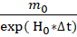 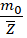
A unidade de distância no
referencial próprio diminui com o tempo
Podemos observar que no início da medida do tempo, antes da contração (t=0), as unidades de distâncias eram as mesmas nos dois referenciais comóvel e próprio:
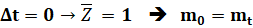
Precisamos ter em mente que um observador no ambiente próprio não percebe sua própria diminuição de tamanho medindo as distâncias em seu próprio referencial em contração. Pois o seu padrão de medida (por exemplo o metro) diminui na mesma proporção que os objetos e distâncias que estão sendo medidos.
Ou seja, se é a medida de uma mesma distância ou objeto no tempo t, sua medida (seu valor numérico) não muda com o tempo. Isto é, na medição de um mesmo objeto em tempos diferentes o que muda é a unidade métrica e não o valor medido do objeto em questão. Portanto podemos escrever:
Se:
L(t1) = 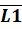 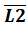 *mt1 e
L(t2) = *mt2
*mt1 e
L(t2) = *mt2
então è
Os valores numéricos das
medidas de comprimento do mesmo objeto não mudam com o tempo
6.4-Um segundo
Como vimos, o segundo é definido como o tempo que a luz leva para percorrer Nc comprimentos de onda do Césio-133. Ou seja:
1s = (Nc*)/c [FT3]
Definição de segundo
No referencial comoving: 1S0
= (Nc*0)/c0 [FT4]
Onde:
0 = 0 * mo
c0 = 0 * mo / S0
No referencial próprio: 1St = (Nc*t )/ct [FT5]
Onde:
t = t * mt
ct = t * mt
/ St
6.5-A Medida da Velocidade da Luz
De [FT4]
derivamos que: 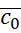 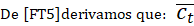
Mas, como vimos acima ([FT2]) os valores numéricos de distância não se alteram no tempo e, portanto:
0 = t [FT7]
O valor numérico do comprimento de onda não muda com o tempo
Podemos concluir, de [FT6] e [FT7] que :
 0 =
0 =  t [FT8]
t [FT8]
O valor numérico
da velocidade da luz é invariante no tempo
(Em valores numéricos Nc *  0= (9192631770)*0.0326 = 299679795)
0= (9192631770)*0.0326 = 299679795)
6.6-Medidas de um Evento
Físico
Vamos agora medir a duração e a distância de um mesmo evento físico com os dois observadores (observador comoving e observador próprio).
Devemos ter em mente que , em se tratando do mesmo evento físico, as grandezas físicas de duração(tempo) e distância são as mesmas nos dois observadores e o que muda entre eles são suas escalas de medidas de tempo e de distância.
Isto é, quando as escalas forem convertidas, quando as medidas forem convertidas de um ambiente para o outro, devemos obter os mesmos valores.
Considere o evento como sendo a passagem de um fóton por uma certa distância. Este evento será medido nos dois referenciais.
|------------ ~ à ---------|
|---------< L0, T0 >-----------|
Evento:
Um fóton atravessa uma distância D0 no tempo T0
6.6.1-Comparando as distâncias
No referencial comoving teremos:
Lo = 0 * m0
T0 = L0 / C0
= ( 0 /  0 )*S0 [FT9A]
0 )*S0 [FT9A]
No referencial próprio teremos:
Lt = t * mt
Tt = Lt / Ct
= ( t /  t )*St [FT9B]
t )*St [FT9B]
Como se trata do mesmo evento físico, ao transpormos de uma unidade de medida para outra (as medidas da escala comoving para a escala própria e vice-versa) deveremos ter os mesmos valores físicos. Isto é:
O Comprimento físico percorrido é o mesmo à Lo = Lt [FT10]
L0 = Lt
à
0*m0
= t * mt
Contudo, de [FT1] sabemos que: m0 = *mT , segue que, como era de se esperar:
t =
0 *
 [FT11]
[FT11]
O valor numérico da medida própria é maior do que o
valor da medida comoving
6.6.2-Comparando os tempos
Como se trata do mesmo evento físico o tempo é o mesmo quando convertido de uma escala para a outra:
O tempo físico transcorrido é o mesmo:
T0 = Tt [FT12]
De [F9A] e [F9B] Teremos
( 0 /  0 )*S0 = ( t /
0 )*S0 = ( t /  t )*St [FT13]
t )*St [FT13]
Portanto:
St/S0
= (0 / 0) * ( t / t ) [FT14]
Mas
de [FT11]: Lt = L0* então :
St/S0 = t / 0
* (1/) [FT15]
Como [FT8] 0 =  t , Teremos
finalmente a relação entre as unidades de tempo:
t , Teremos
finalmente a relação entre as unidades de tempo:
St = S0 /  [FT16]
[FT16]
Relação entre a
unidade de tempo Próprio e Unidade de tempo Comoving
De forma genérica se medirmos um tempo T0 no referencial comoving , isto é :
T0 = 0 * S0
E utilizarmos [FT16], teremos
T0
= (0 *) * St
Mas no referencial próprio:
Tt = t * St
Tt = t * St = (0
*)*St
Portanto, finalmente teremos:
t = * 0 [FT18]
O valor do tempo próprio
é maior que o valor do tempo comoving
Onde:
t = Valor numérico da medida do tempo no
referencial próprio (gravitacional) 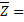
0 = Valor numérico da medida do tempo no
referencial comoving (não gravitacional)
A fórmula [FT18], acima, significa que mediremos uma DILATAÇÃO TEMPORAL no referencial comoving em relação ao referencial próprio. Isto é, mediremos um tempo maior (o ‘tic-tac’ do relógio próprio é mais rápido) no referencial próprio do que no referencial comoving.
6.7-A velocidade da luz
Podemos agora comparar a velocidade da luz nos dois referenciais:
No referencial próprio, por definição: ct = t * mt/st
Mas de [FT08]
 0 =
0 =  t
t
[FT1] m0
= * mt
[FT16]
S0 = * St
Segue que
ct =  0 *m0/S0 = c0
0 *m0/S0 = c0
Portanto:
Ct = C0 [FT19]
A velocidade da luz é
invariante em ambos os referênciais
6.8-A Dilatação
cosmológica temporal e o redshift (Z)
Como um caso particular, poderemos estudar como a escala de tempo varia com o redshift. A idéia é associar a distância de uma estrela ou galáxia com o tempo que a luz leva para chegar aqui na Terra e a mudança das escalas (de medida e de tempo) durante esse tempo.
O tempo que a informação, através da luz, de uma estrela distante chega em nós pode ser grande o suficiente para percebermos essa dilatação.
Consideremos uma estrela a uma distância L medida da terra, ou L0 medida de um observador comoving.
Do nosso artigo anterior [04] copiamos a
fórmula [F03] que relaciona o comprimento de onda nos referenciais próprio e comoving:
λt = λ0*exp( H0*∆t) [FR01]
Comprimento de onda no referencial próprio
Mas por definição:
Z = (λ- λ0
) / λ0 [FR02]
Redshift
Definition
De [FR01] e [FR02] temos que
Z+1 = exp( H0*∆t) =  [FR03]
[FR03]
Agora podemos escrever as relações de tempo entre as escalas em função do redshift:
Utilizando [FR03] e [FT18] acima, derivamos finalmente o famoso “tempo de dilatação cosmológica” [05][06][07]:
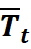 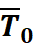
COSMOLOGICAL
TIME DILATATION
Esta fórmula mostra que a medida de tempo no referencial próprio (da terra) é maior que a medida do tempo no referencial comoving . Há uma dilatação do tempo comóvel em relação ao tempo próprio.
6.8.1-Algumas considerações Físicas
O leitor pode perguntar se estes dois padrões de medidas são apenas uma mudança de escalas como, por exemplo, de metros para jardas ou de minutos para horas ou reflete algo mais profundo, como o nosso tempo de vida ou se os processos físicos nos referenciais levam realmente tempos diferentes. A resposta é: sim, os processos físicos começam a correr mais rapidamente, em relação a um observador comoving.
Contudo devemos ficar atentos: se medirmos o tempo de um processo físico padrão em várias escalas de tempo diferente em nosso referencial próprio, não mediremos diferenças no tempo. Não mediremos diferença porque nosso próprio padrão de tempo está mudando na mesma proporção. Pois: Os processos físicos andam mais rapidamente mas nosso relógio também corre mais rapidamente.
6.9-TR
Podemos perceber que a DUT prevê algo contrário à Teoria da Relatividade (TR). Mas, na verdade , como veremos, não há contradição. A DUT trata do tempo que só é percebido em escalas cosmológicas, de muitos milhões de anos. Enquanto na TR o efeito é instantâneo e não cumulativo: A variação no tempo é fixa e não depende de quanto tempo levamos para medi-la.
Na DUT a variação temporal depende de quanto tempo demoramos para medi-la, pois a unidade de tempo vai gradativamente e continuamente diminuindo em relação ao referencial comoving.
7-Explosão das Super
Novas do tipo SN1A
Podemos pensar nas SN1A como o ‘TIC-TAC’ de um relógio
cosmológico:
Quando a SN1A começa a explodir representa o ‘TIC’ do relógio e quando acaba de
explodir o ‘TAC’.
Para uma SN1A mais perto de nós, o fóton de luz leva menos tempo para chegar, assim o ‘TIC-TAC’ dela terá um período menor que o ‘TIC-TAC’ de uma SN1A mais distante.
Para o sinal (luz) chegar até nós, quanto mais tempo demorar, mais nossos relógios estarão mais rápidos e, assim, mediremos o ‘TIC-TAC’ delas ainda mais lento.
Esta relação [FR04] que derivou a dilatação temporal com o aumento da distância ou redshift explica o aumento do tempo observado para a explosão das supernovas do tipo SN1A com a distância da Terra: Foi extensamente verificado que o tempo da explosão, medido da Terra, cresce com o fator (1+Z), e isso não é explicado pela TR.
Vários artigos ilustram isso:

“Goldhaber
et al....analysed SN Ia light curves for 35
high-redshift SNe with 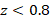 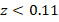 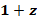
“The cosmic time dilation observed in Type Ia supernova light curves suggests that the passage of cosmic time varies throughout the evolution of the Universe. This observation implies that the rate of proper time is not constant, as assumed in the standard FLRW metric, but instead is time-dependent.”[08]
“This work is based on the first results from a systematic search for high redshift Type Ia supernovae. Using filters in the R-band we discovered seven such SNe, with redshift z = 0.3 - 0.5, before or at maximum light. Type Ia SNe are known to be a homogeneous group of SNe, to first order, with very similar light curves, spectra and peak luminosities. In this talk we report that the light curves we observe are all broadened (time dilated) as expected from the expanding universe hypothesis. Small variations from the expected 1+z broadening of the light curve widths can be attributed to a width-brightness correlation that has been observed for nearby SNe (z<0.1). We show in this talk the first clear observation of the cosmological time dilation for macroscopic objects.”[09]
Ou seja, a DUT explica exatamente o problema da dilatação do tempo com o fator (1+Z) na explosão da Super Nova do tipo SN1A.
8-Dilatação do tempo
Cosmológico e a Teoria da Relatividade Geral
Na Teoria da Relatividade Geral, a dilatação temporal em um campo gravitacional pode ser escrita como:
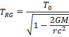
onde 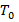 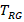
Pela DUT, mostramos anteriormente que a variação temporal associada à contração das escalas físicas é dada [F8] por:
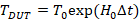
Se considerarmos que ambos os efeitos atuam simultaneamente, a variação temporal total pode ser escrita como:
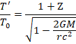
Mostrando que a dilatação do tempo passa a depender tanto do campo gravitacional local quanto do tempo cosmológico acumulado.
8.1-Equilíbrio entre a Dilatação Temporal Gravitacional
(TR) e a Escala Temporal da DUT
Nesta seção, estimamos a escala de tempo necessária
para que a variação temporal prevista pela Teoria do Universo Decrescente (DUT)
compense a dilatação temporal gravitacional prevista pela Teoria da
Relatividade Geral (TR) na superfície da Terra.
De acordo com a TR, o tempo próprio medido a uma
distância radial de uma massa , em relação a um
observador distante (comóvel), é dado por:
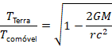
Esse fator é menor que a unidade, indicando que
relógios em um campo gravitacional correm mais lentamente em relação a um
observador distante.
Em contraste, no contexto da DUT, a variação temporal
em relação ao referencial comóvel é dada por:
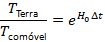
onde 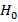
Assumindo que ambos os efeitos atuam simultaneamente e
de forma independente, o fator temporal combinado é dado pelo produto:
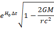
A condição para compensação exata entre os dois efeitos
é, portanto:
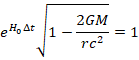
Resolvendo para , obtemos:
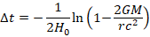
Para campos gravitacionais fracos ( 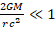
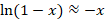
obtendo:
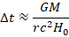
Substituindo os parâmetros físicos da Terra:
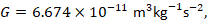 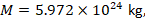 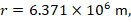 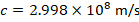
e adotando:
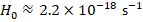
obtemos:
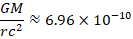
e, portanto:
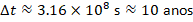
8.2-Interpretação
Esse resultado indica que, no contexto da DUT, o efeito
cumulativo da variação temporal torna-se comparável em magnitude à dilatação
temporal gravitacional na superfície da Terra após aproximadamente 10 anos.
Em outras palavras, enquanto a dilatação temporal na TR
é um efeito local fixo determinado pelo potencial gravitacional, a DUT prevê
uma evolução temporal contínua. Após um intervalo cosmológico suficientemente
longo, a contribuição da DUT pode compensar efetivamente o efeito relativístico
quando ambos são comparados em relação a um referencial comóvel.
9-Conclusão
Utilizando os conceitos e fórmulas do “Decreasing Universe Theory” (DUT) conseguimos mostrar que, de fato, o “Tempo de Dilatação Cosmológica” existe e pode ser derivado das equações e conceitos da DUT e, além disso, os resultados casam exatamente com as diversas observações feitas utilizando-se das medidas do tempo da explosão das Super novas do tipo SN1A. Este resultado fortalece ainda mais a robustez dessa nova teoria.
10-Referências
[01] Jocaxian Nothingness
https://medcraveonline.com/AAOAJ/the-jocaxianrsquos-nothingness.html
[02] Derivation of Hubble’s Law and its relation to dark energy
and dark matter
https://medcraveonline.com/OAJMTP/OAJMTP-02-00049.pdf
[03] Jocaxian's Train #1
https://www.omicsonline.org/open-access-pdfs/jocaxians-train-2476-2296-1000154.pdf
[04] Decreasing universe: the distance as a function of redshift https://medcraveonline.com/AAOAJ/AAOAJ-09-00220.pdf
[05] Cosmic Time Dilation
https://ui.adsabs.harvard.edu/abs/1997ApJ...482L.115S/abstract
[06] Astronomers observe time dilation in early universe
https://www.theguardian.com/science/2023/jul/03/astronomers-observe-time-dilation-in-early-universe
[07] Time dilation finally observed in quasars
https://cerncourier.com/a/time-dilation-finally-observed-in-quasars/
[08] Time Dilation Observed in Type Ia Supernova
Light Curves and Its Cosmological
Consequences
https://www.mdpi.com/2075-4434/13/3/55
[09] Observation of cosmological time dilation using Type Ia supernovae as clocks
https://ui.adsabs.harvard.edu/abs/1997ASIC..486..777G/abstract
[10] Time dilation observed in Type Ia supernova
light curves and its cosmological
consequences
https://arxiv.org/html/2506.19099v1#:~:text=We%20conclude%20that%20the%20gravitational,redshift%20depends%20on%20cosmic%20time.
[11] Second
https://en.wikipedia.org/wiki/Second
[12] DUT: Main Published
Papers
https://jocaxx.github.io/DUniverse/Articles.pdf